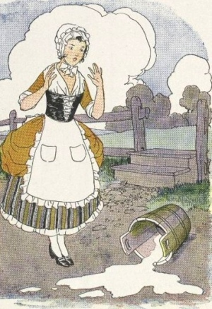

|  | On the Migration of Fablesby Max Müller[1881] |
This monograph by Max Müller is a classic study of East to West migration of folk stories. He sets it up with a detailed study of the fable known to us as the Milkmaid and the Spilt Milk. This is the same theme expressed by the proverb 'Do not count your chickens before they are hatched.' He traces this all the way back to the Panchatantra, complete with a detailed historical flowchart.
Müller then gives a second example: the fable of Barlaam and Josaphat. Barlaam was a (possibly legendary) dark-ages saint. Müller demonstrates that this tale matches the narrative of the Birth Story of the Buddha, as found in the Lalita Vistara. So, ironically, the Buddha ended up as a Catholic saint, with his own day, November 27th!
This classic (and still controversial) paper is required reading for any students of comparative religion or folklore.--J.B. Hare, December 5th, 2009.
On the Migration of Fables
Appendix
Notes